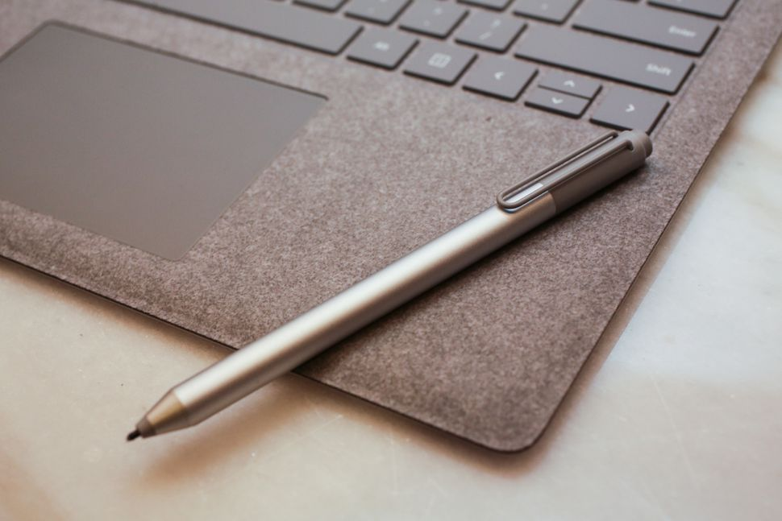
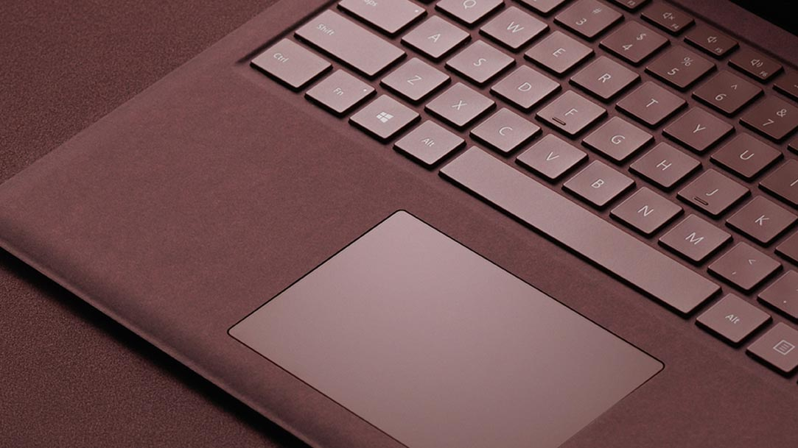
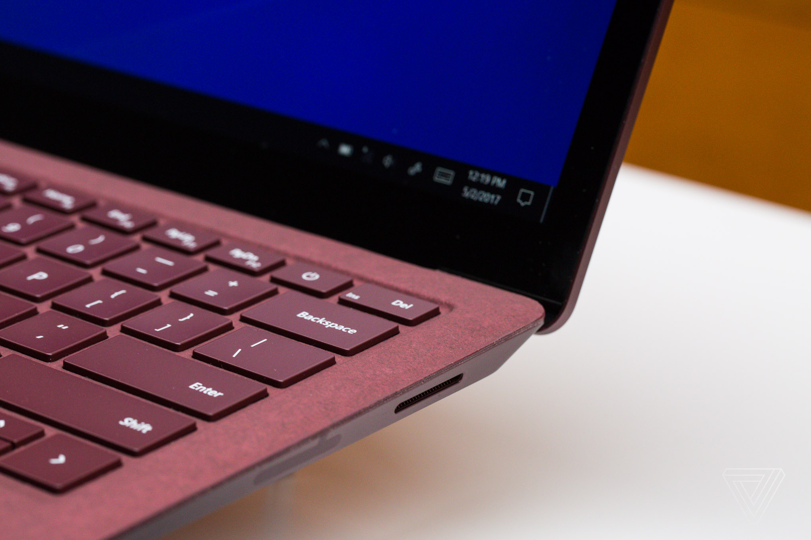
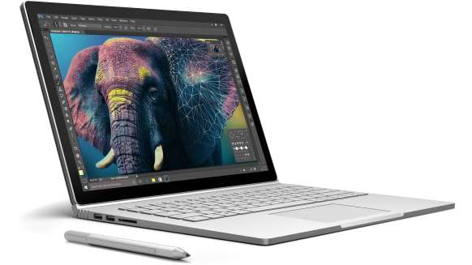

Microsoft Surface Laptop: La competencia definitiva.

Microsoft Surface Laptop, un dispositvo que hace poco se ha presentado y que es un modelo que llega para competir de cara a cara con equipos como pueden ser los MacBook de Apple o los que fabrica Xiaomi.
Este ordenador tiene un acabado en metal, por lo que su aspecto Premium es notable. Para que esto sea así, tambíen incluye el acabado del teclado denominado Alcantara, que es como aterciopelado, que es lo que utilizan los coches de lujo en los acabados de sus asientos.

El teclado es todo tejido y poseé un acabado mas suave, mas caliente, y es más comodo que el aluminio (Aunque está por verse si se acumula mucha suciedad con el paso del tiempo). Algo para sobresaltar en este diseño es la tapa del Microsoft Surface Laptop se puede abrir con una sola mano, lo que es ideal para utilizarlo en condiciones de poca movilidad.

El sistema operativo que se incluye en esta portátil es Windows 10 S, la versión que sólo permite instalar aplicaciones de la tienda de Microsoft. Sin embargo no funciona mal, pero las limitaciones se dejan notar bastante.
En lo que tiene que ver con el peso, el que ofrece Microsoft Surface Laptop es de 1.250 gramos, por lo que es muy transportable y en lo que tiene que ver con las dimensiones destaca que el grosor se queda en 1,5 centímetros. En definitiva, que es llamativo del portátil.
Con una fabricación de calidad, lo que se ve incluso de las bisagras, el teclado es cómodo de utiizar y con un touchpad de unas dimensiones más que suficientes para que el uso sea tan cómodo como efectivo. Este componente es retroiluminado.
Se incluye USB 3.0 y DisplayPort, pero sorprendentemente, no tiene USB tipo C, que es casi un estándar en la actualidad y ofrece amplias opciones de uso.

Incluye un procesador Intel. Concretamente es posible dar uso a la nueva generación de los Core i5 y Core i7, dependiendo de las necesidades de potencia que se tenga. La gráfica integrada en cada uno de los casos es diferente, siendo las siguientes: Graphics HD 620 e Iris Plus Graphics 640, respectivamente. Claramente los juegos no son un objetivo. La RAM, llega a varias opciones, ya que es posible elegir 4,8 o 16GB, de esta forma el usuario es el que decide lo que necesita.
El almacenamiento, rápido que corresponde a discos SSD, donde de nuevo hay varias posibilidades: 128, 256 o 512 GB, que no está nada mal.

En lo que tiene que ver con la autonomía, en pruebas se ha conseguido una media de 11 horas de uso normal, no llega a las 14 indicadas por Microsoft, pero de igual forma no está nada mal y permite una jornada de trabajo sin recarga sin el más mínimo problema.
Este ordenador llega con una pantalla de 13,5 pulgadas, con una resolución de 2.256 x 1.506(201 ppp). Es un componente táctil y dispone de protección Gorilla Glass. En sonido, más potente de lo que se esperaba, gracias a sus dos altavoces, ha sido una grata sorpresa. Con una cámara con calidad de 720p(HD), que es suficiente para realizar videoconferencia. Un modelo TOPE, DE GAMA sin duda alguna.